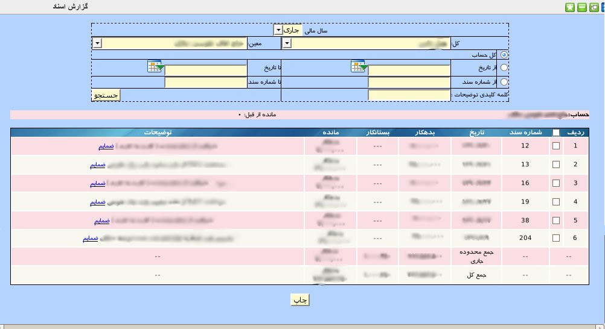

۱-گزارش اسناد
پنل گزارش اسناد یک پنل گزارشگیری کامل و جامع است که به کاربر این امکان را می دهد چندین گزارش را با هم و در مدت زمان کوتاهی از اسناد ثبت شده داشته باشد. ابتدا باید حساب کل و حساب معین مورد نظر را انتخاب نمایید. سپس بر اساس گزارش مورد نیاز یکی از گزینه های گزارشگیری از کل حساب, گزارشگیری در بازه تاریخی, گزارشگیری در بازه شماره سند و یا گزارشگیری بر اساس توضیحات موجود در سند را انتخاب نمایید و در انتها بر روی دکمه جستجو کلیک کنید. پس از چند لحظه کل اسناد مورد نیاز در قالب یک جدول نمایش داده می شود همچنین جمع محدوده انتخاب شده و جمع کل اسناد برای این حساب نمایش داده می شود.

در صورت نیاز به چاپ گزارش می توانید از دکمه چاپ پایین صفحه استفاده نمایید. درصورتی که سند ضمیمه ای داشته باشد می توانید بر روی لینک ضمائم که در انتهای توضیحات هر رکورد نمایش داده می شود کلیک نمایید تا تمام فایل های ضمیمه را مشاهده کنید.